平成26年度（H26）計算問題
測量士補試験の計算問題 10 問。紙と鉛筆で解いてから「答えと解説」を開いてください。関数の値は試験の巻末の関数表を使います。
No.6多角
図6のように，既知点Bにおいて，既知点Aを基準方向として新点C方向の水平角を測定しようとしたところ，既知点Bから既知点Aへの視通が確保できなかったため，既知点Aに偏心点Pを設けて，水平角T′，偏心距離e及び偏心角Φの観測を行い，表6の結果を得た。既知点A方向と新点C方向の間の水平角Tは幾らか。最も近いものを次の中から選べ。
ただし，既知点A，B間の距離Sは，2,000 mであり，S及び偏心距離eは基準面上の距離に補正されているものとする。また，角度1ラジアンは，2″×10⁵とする。
なお，関数の数値が必要な場合は，巻末の関数表を使用すること。
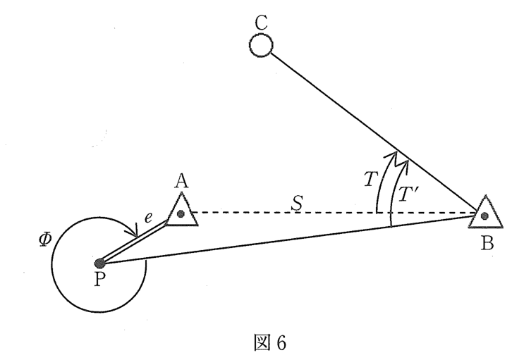
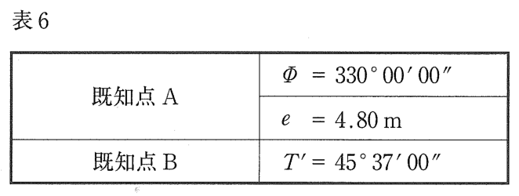
- 45°24′00″
- 45°27′00″
- 45°30′00″
- 45°33′00″
- 45°36′00″
答えと解説
答え 4
B から A が見えないので、A から少しはなれた P を見て角 T′ を測り、あとで A の向きとの差 x を直します（偏心補正）。偏心角 Φ は、P で B の向きから右回りに A の向きまで測った角です。
A から直線 PB までの長さは
B から 2,000 m 先で 2.40 m ずれて見えるので、角 x は（小さい角なので、長さ ÷ 距離 がそのままラジアン）
0.0012 × (2 × 10⁵)″ ＝ 240″ ＝ 4′
図では、A の向きのほうが P の向きより C に近いので、T は T′ より x だけ小さい角です。
この問題の違和感を報告
No.8GNSS
GNSS測量機を用いた基準点測量を行い，基線解析により基準点Aから基準点B，基準点Aから基準点Cまでの基線ベクトルを得た。表8は，地心直交座標系におけるX軸，Y軸，Z軸方向について，それぞれの基線ベクトル成分（ΔX，ΔY，ΔZ）を示したものである。基準点Bから基準点Cまでの斜距離は幾らか。最も近いものを次の中から選べ。
なお，関数の数値が必要な場合は，巻末の関数表を使用すること。
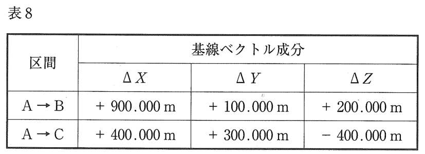
- 574.456 m
- 748.331 m
- 806.226 m
- 877.496 m
- 1,374.773 m
答えと解説
答え 3
基線ベクトルは「ある点から別の点まで、X・Y・Z 方向にどれだけ動くか」を表した数です。B→A は A→B の符号を全部逆にしたものなので、B→C ＝ (A→C) − (A→B) です。
ΔY ＝ 300 − 100 ＝ 200 m
ΔZ ＝ −400 − 200 ＝ −600 m
斜距離（2 点を結ぶまっすぐな長さ）は、3 つの辺が 500・200・600 の箱の対角線です。三平方の定理を 2 回使うと、3 つの 2 乗を足して √ を付けることになります。
斜距離 ＝ √650,000 ＝ 100 × √65 ＝ 100 × 8.06226 ＝ 806.226 m
この問題の違和感を報告
No.12水準
図12は，水準点Aから固定点(1)，(2)及び(3)を経由する水準点Bまでの路線を示したものである。この路線で公共測量における水準測量を行い，表12に示す観測結果を得た。再測する観測区間はどれか。次の中から選べ。
ただし，往復観測値の較差の許容範囲は，Sを観測距離（片道，km単位）としたとき，2.5 mm√Sとする。なお，関数の数値が必要な場合は，巻末の関数表を使用すること。
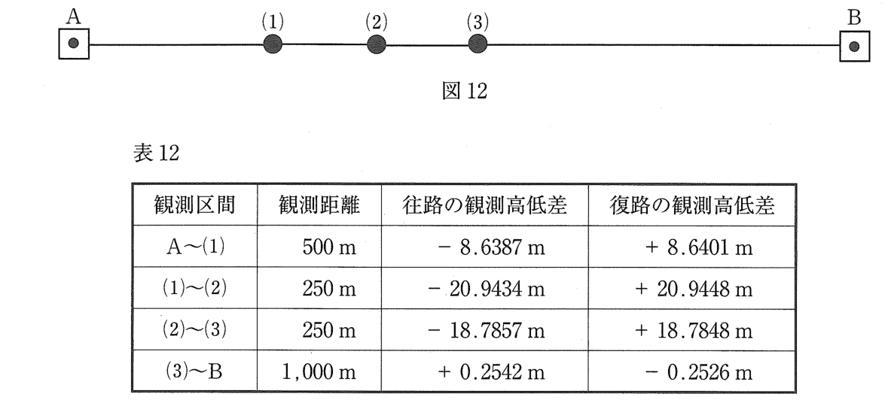
- A～(1)
- (1)～(2)
- (2)～(3)
- (3)～B
- 再測の必要はない
答えと解説
答え 2
較差は、行き（往路）と帰り（復路）で測った高低差の食いちがいです。帰りは符号が逆になるので、往路と復路を足したものが較差になります。
(1)～(2) −20.9434 ＋ 20.9448 ＝ 0.0014 m ＝ 1.4 mm
(2)～(3) −18.7857 ＋ 18.7848 ＝ −0.0009 m 大きさは 0.9 mm
(3)～B 0.2542 − 0.2526 ＝ 0.0016 m ＝ 1.6 mm
許容範囲 2.5 mm√S と比べます。S は km なので、500 m は 0.5、250 m は 0.25、1,000 m は 1 です。0.5² ＝ 0.25 なので √0.25 ＝ 0.5。
(1)～(2) 2.5 × √0.25 ＝ 2.5 × 0.5 ＝ 1.25 mm ＜ 1.4 mm → 超えている
(2)～(3) 2.5 × √0.25 ＝ 2.5 × 0.5 ＝ 1.25 mm ＞ 0.9 mm
(3)～B 2.5 × √1 ＝ 2.5 mm ＞ 1.6 mm
許容範囲を超えた (1)～(2) を再測します。
この問題の違和感を報告
No.15地形
トータルステーションを用いた縮尺1/1,000の地形図作成において，傾斜が一定な直線道路上にある点Aの標高を測定したところ81.6 mであった。一方，同じ直線道路上の点Bの標高は77.6 mであり，点Aから点Bの水平距離は60 mであった。
このとき，点Aから点Bを結ぶ直線道路とこれを横断する標高80 mの等高線との交点は，地形図上で点Aから何cmの地点か。最も近いものを次の中から選べ。
- 1.2 cm
- 2.4 cm
- 3.6 cm
- 4.8 cm
- 6.0 cm
答えと解説
答え 2
道路は傾きが一定なので、水平距離は標高の差に比例します。A から 80 m の等高線までの標高差と、A から B までの標高差の比を使います。
A と等高線の標高差 ＝ 81.6 − 80 ＝ 1.6 m
A から等高線まで ＝ 60 × 1.6 ÷ 4.0 ＝ 24 m
縮尺 1/1,000 では、実際の 1 m が地図上の 1 mm なので、24 m は 24 mm ＝ 2.4 cm。
この問題の違和感を報告
No.19写真
画面距離7 cm，撮像面での素子寸法6 μmのデジタル航空カメラを用いた，数値空中写真の撮影計画を作成した。このときの撮影基準面での地上画素寸法を18 cmとした場合，撮影高度は幾らか。最も近いものを次の中から選べ。
ただし，撮影基準面の標高は0 mとする。
- 1,500 m
- 1,700 m
- 1,900 m
- 2,100 m
- 2,300 m
答えと解説
答え 4
地上画素寸法は、写真の 1 画素に写る地面の長さです。図の 2 つの三角形（レンズの上と下）は相似なので、「素子の大きさ ： 画面距離 ＝ 地上の大きさ ： 撮影高度 H」です。画面距離は、レンズから撮像面までの長さ。単位を m にそろえます。
H ＝ 0.07 × 0.18 ÷ 0.000006 ＝ 0.07 × 30,000 ＝ 2,100 m
撮影基準面の標高は 0 m なので、これがそのまま撮影高度です。
この問題の違和感を報告
No.20写真
画面距離12 cm，撮像面での素子寸法12 μmのデジタル航空カメラを用いて，海面からの撮影高度2,500 mで鉛直空中写真の撮影を行ったところ，一枚の数値空中写真の主点付近に画面の短辺と平行に橋が写っていた。この橋は標高100 mの地点に水平に架けられており，画面上で長さを計測したところ1,250画素であった。
この橋の実長は幾らか。最も近いものを次の中から選べ。
- 300 m
- 313 m
- 325 m
- 338 m
- 350 m
答えと解説
答え 1
写真の縮尺は「画面距離 ÷ 写したものからカメラまでの高さ」です。橋は標高 100 m にあるので、高さは 2,500 − 100 ＝ 2,400 m。
写真の縮尺 ＝ 0.12 m ÷ 2,400 m ＝ 1/20,000
実際の長さ ＝ 15 mm × 20,000 ＝ 300,000 mm ＝ 300 m
この問題の違和感を報告
No.21地図
図21は，国土地理院刊行の電子地形図25000（縮尺を変更，一部改変）の一部である。この図内に示す消防署の経緯度は幾らか。最も近いものを次の中から選べ。
ただし，表21に示す数値は，図内に示す三角点の経緯度及び標高を表す。
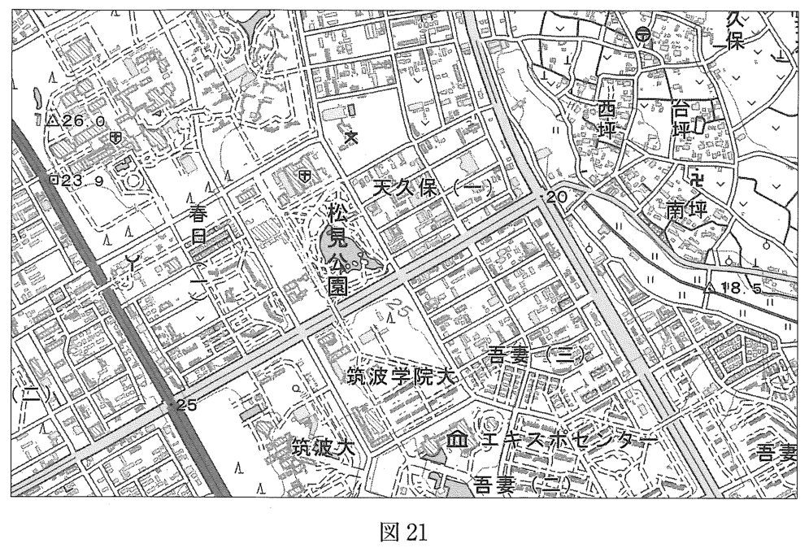
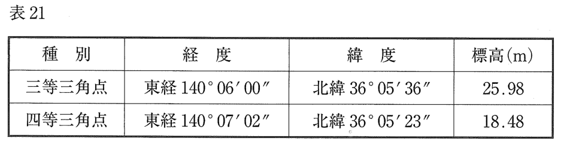
図の出典：国土地理院「電子地形図25000」（測量士補試験の問題に掲載されたもの）
- 東経140°06′03″ 北緯36°05′30″
- 東経140°06′07″ 北緯36°05′26″
- 東経140°06′24″ 北緯36°05′32″
- 東経140°06′28″ 北緯36°05′35″
- 東経140°06′55″ 北緯36°05′34″
答えと解説
答え 2
図 21 の中から地図記号を探します。三角点は三角形の中に点、消防署は「さすまた」（Y の形の道具）です。左上の 26.0 と書かれた三角点が 25.98 m の①、右の 18.5 と書かれた三角点が 18.48 m の②です。図の右へ行くほど経度が大きく、下へ行くほど緯度が小さくなります。
緯度の差 05′36″ − 05′23″ ＝ 13″ （図の上で縦 26.1 mm）
消防署は、三角点①から東へ 12.5 mm、南へ 22.1 mm です。
緯度 13″ × 22.1 ÷ 26.1 ≒ 11″ → 05′36″ − 11″ ＝ 05′25″
最も近いのは、東経 140°06′07″、北緯 36°05′26″（選択肢 2）です。
図の出典：国土地理院「電子地形図25000」（測量士補試験の問題に掲載されたもの）。赤・青の線と文字は当サイトが書き足しました
この問題の違和感を報告
No.26応用
表26は，ある公共測量における縦断測量の観測手簿の一部である。観測は，器高式による直接水準測量で行っており，BM1，BM2を既知点として観測値との閉合差を補正して標高及び器械高を決定している。表中の［ア］～［ウ］に当てはまる値はそれぞれ何か。次の中から正しい組合せを選べ。
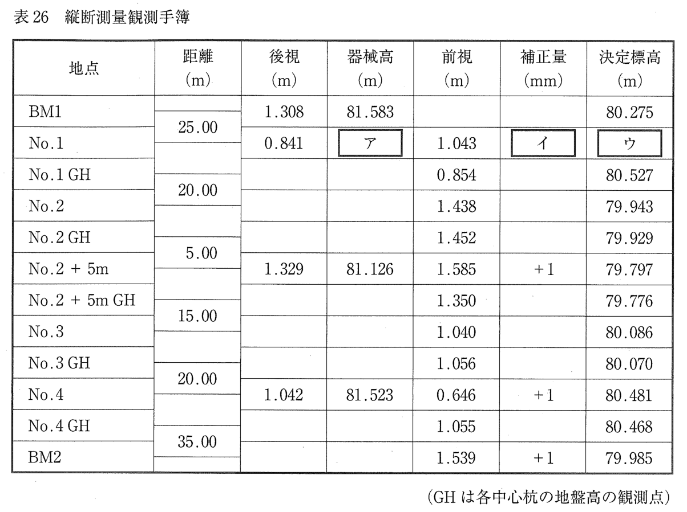
- ア=81.381／イ=0／ウ=80.540
- ア=81.381／イ=＋1／ウ=80.540
- ア=81.381／イ=＋1／ウ=80.541
- ア=81.382／イ=0／ウ=80.541
- ア=81.382／イ=＋1／ウ=80.541
答えと解説
答え 1
器高式は、器械の高さ（器械高）を先に出しておき、そこから標尺の読みを引いて標高を出す方法です。後視は標高の分かった点の読み、前視は標高を知りたい点の読み。補正量は、BM2 で出た食いちがい（閉合差）を割りふった値です。
標高 ＝ 器械高 − 前視 ＋ 補正量
ア は、No.1 GH の行から逆に出せます（No.1 GH は、No.1 を後視した器械 ア で測った点で、補正量の欄は空いています）。
ウ は、器械高 ア から No.1 の後視を引いたものです。
イ は、補正する前の No.1 の標高と ウ の差です。
イ ＝ 80.540 − 80.540 ＝ 0 mm
ア＝81.381、イ＝0、ウ＝80.540 で、選択肢 1 です。
この問題の違和感を報告
No.27応用
図27は，境界点A，B，C，Dで囲まれた土地を表したものであり，直線ADは道路との境界線となっている。この道路が拡幅されることになり，新たな道路境界線PQが引かれることとなった。直線ADと直線PQが平行であり，拡幅の幅が3.0 mである場合，点P，B，C，Qで囲まれた土地の面積は幾らか。最も近いものを次の中から選べ。
なお，点A，B，C，Dの平面直角座標系における座標値は，表27のとおりとする。関数の数値が必要な場合は，巻末の関数表を使用すること。
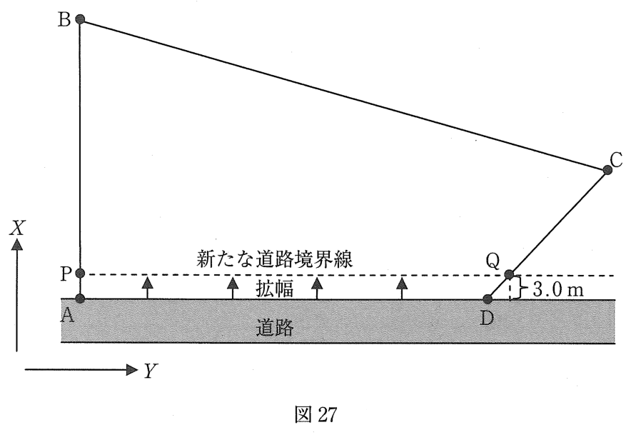
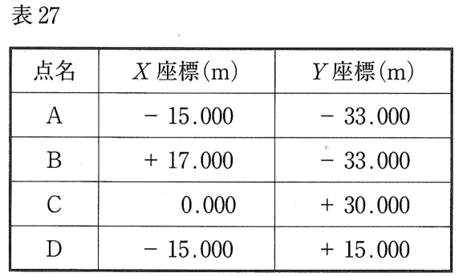
- 1,115.50 m²
- 1,219.50 m²
- 1,368.00 m²
- 1,462.00 m²
- 1,507.50 m²
答えと解説
答え 2
まず新しい境界線 PQ の 2 点の座標を出します。AD は X ＝ −15 の東西の線なので、3.0 m 北（上）に寄せた PQ は X ＝ −12 の線です。
DC の傾き X が −15 → 0 と 15 増える間に、Y は 15 → 30 と 15 増える
→ X が 3 増えると Y も 3 増える → Q (−12, 18)
座標から面積を出します。P を原点に移す（全部の X に 12、Y に 33 を足す）と数字が小さくなります。P→B→C→Q の順に、「X ×（次の点の Y − 前の点の Y）」を足すと、面積の 2 倍です。
P 0 × (0 − 51) ＝ 0
B 29 × (63 − 0) ＝ 1,827
C 12 × (51 − 0) ＝ 612
Q 0 × (0 − 63) ＝ 0
面積 ＝ (1,827 ＋ 612) ÷ 2 ＝ 2,439 ÷ 2 ＝ 1,219.5 m²
この問題の違和感を報告
No.28応用
表28は，ある河川の横断測量を行った結果の一部である。図28は横断面図で，この横断面における左岸及び右岸の距離標の標高は20.7 mである。また，各測点間の勾配は一定である。この横断面の河床部における平均河床高の標高をm単位で小数第1位まで求めたい。最も近いものを次のページの中から選べ。なお，河床部とは，左岸堤防表法尻から右岸堤防表法尻までの区間とする。
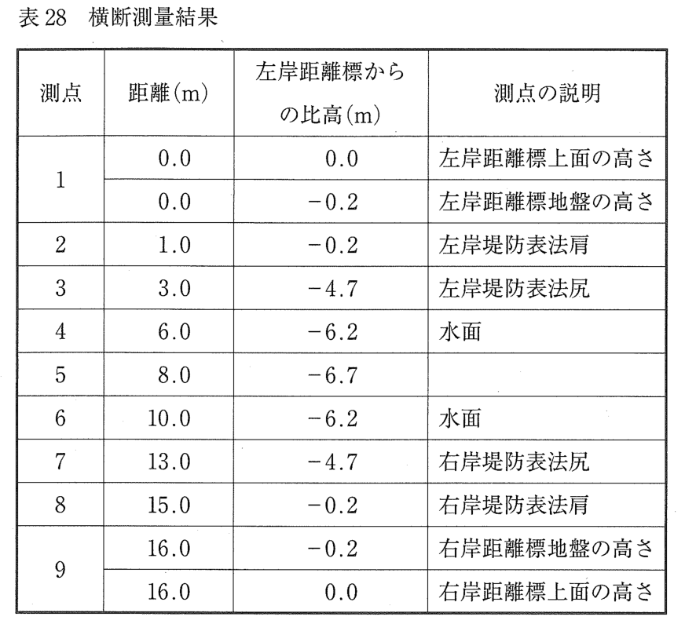
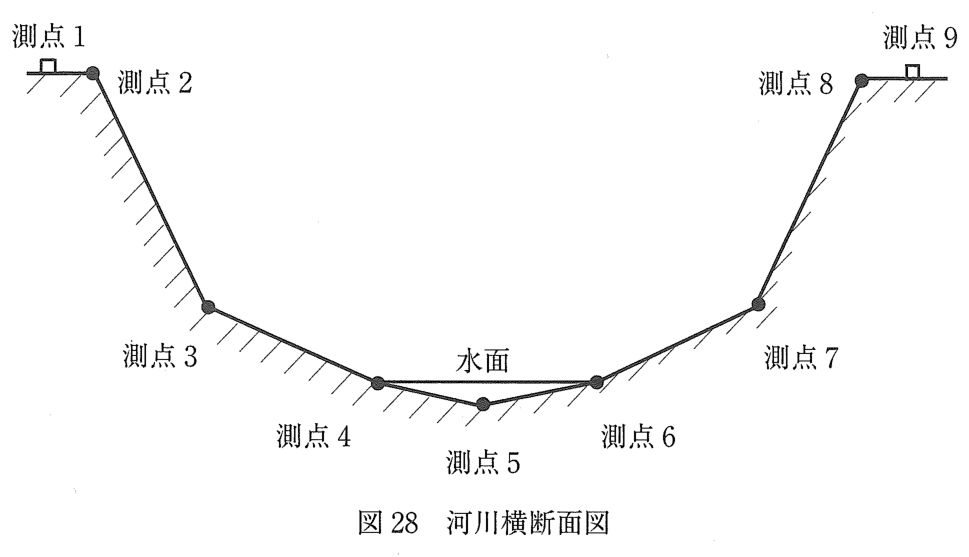
- 14.3 m
- 14.5 m
- 14.9 m
- 15.4 m
- 15.8 m
答えと解説
答え 3
河床部は、左岸の表法尻（測点 3）から右岸の表法尻（測点 7）までです。表法尻は、堤防の川側の斜面の下の端。まず、この 5 つの測点の標高を出します。比高は、標高 20.7 m の距離標からの高さの差です。
測点 4・6 20.7 − 6.2 ＝ 14.5 m
測点 5 20.7 − 6.7 ＝ 14.0 m
測点の間隔が 3 m と 2 m でちがうので、5 つをただ平均してはいけません。いちばん低い 14.0 m の線から上の面積を出し、幅 10 m で割ってならします。
測点 4～5 0.5 × 2 ÷ 2 ＝ 0.5
測点 5～6 0.5 × 2 ÷ 2 ＝ 0.5
測点 6～7 (0.5 ＋ 2.0) × 3 ÷ 2 ＝ 3.75
面積の合計 ＝ 8.5 m²
平均河床高 ＝ 14.0 ＋ 0.85 ＝ 14.85 m ≒ 14.9 m